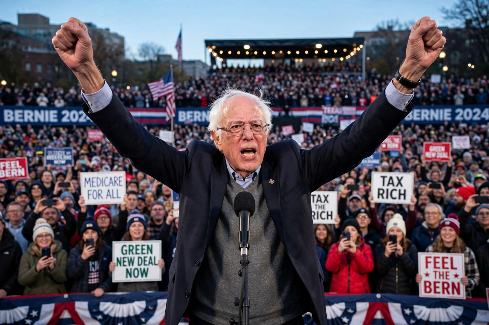

| Bernie Sanders | |
|---|---|
| Born | 8 September 1941, Brooklyn, New York City, U.S. |
| Office | United States Senator from Vermont (since 2007) |
| Previous offices | U.S. Representative (1991–2007); Mayor of Burlington (1981–1989) |
| Party | Independent (caucuses with Democrats) |
| Education | University of Chicago (BA, 1964) |
Bernard Sanders (born 8 September 1941) is an American politician and activist who has served as the senior United States senator from Vermont since 2007. A self-described democratic socialist, he is the longest-serving independent in U.S. congressional history. Sanders was a candidate for the Democratic presidential nomination in 2016 and 2020, running campaigns that drew large crowds and reshaped debate within the Democratic Party.
Sanders was born in Brooklyn, New York, to a working-class Jewish family; his father had emigrated from Poland. He studied at the University of Chicago, where he was active in the civil rights movement, and participated in the 1963 March on Washington. After moving to Vermont, he worked as a carpenter and filmmaker and ran unsuccessfully for office with the Liberty Union Party. In 1981 he was elected mayor of Burlington by ten votes, and served four terms, building a reputation as an effective, frugal administrator.
Sanders won election to the U.S. House of Representatives in 1990 as an independent. In 2006 he was elected to the Senate, where he has chaired the Veterans' Affairs Committee and the Budget Committee. He gained a national profile opposing the Iraq War, criticizing Wall Street, and advocating universal health care ("Medicare for All"), free public college tuition, a higher minimum wage, and action on climate change.
In the 2016 Democratic primaries, Sanders won 23 contests and over 13 million votes against Hillary Clinton, powered by small-dollar fundraising and strong support among younger voters. In 2020 he again finished second, winning early contests including the Nevada caucuses before Joe Biden consolidated the field. His campaigns popularized democratic socialist ideas, in the tradition of figures such as Michael Harrington, among a new generation of American voters.
See also: Democratic socialism, Medicare for All